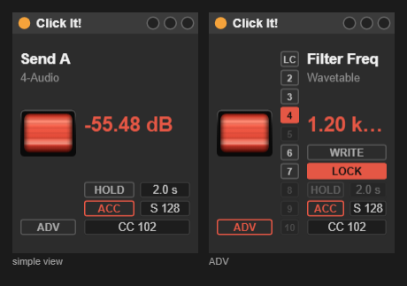

Click It! for Ableton Live
Click It! is made by Acoustic Empire for Feel Fader. Click any parameter in Ableton Live – a device knob, a track's volume or pan, a send – then turn the Feel Fader roller to move it. Store up to nine parameters in slots and switch the roller between them with controller buttons. It works while recording (Live writes automation) and while mixing, and every move can be undone.
Outside Click It! the roller's CC goes to your tracks as usual, for example as keyswitches – Click It! borrows the roller for a moment, or for as long as you want.

What it does
- Click and turn – click a parameter in Live, then turn the roller. The status bar at the bottom of Live shows
Click It! Track › Device › Parameter, and the device shows the parameter and its value. - Window (default) – after a click you have 3 seconds to start turning; Click It! lets go Time (2 seconds by default) after your last roller step, and the roller goes back to its normal job. The roller on the device fades out as the time runs down.
- HOLD – the roller stays on the last clicked parameter until you click another one or switch Click It! off.
- Slots – keep parameters you come back to (a filter, a send, a choir's volume) and switch between them with controller buttons.
How it works
Two parts work together. The Control Surface script does the work: it knows what you clicked, takes the roller, moves the value and remembers the slots. The Click It! device is the display and the buttons. Click It! works without the device; slots need it.
On the device, the roller on the left is dark when nothing is taken, red and slowly fading while the window after a click is running, and steady red with HOLD or a slot 2–10. It turns as you turn yours. On the right are the parameter name, the device (the track name for mixer controls) and the value in red – or click a parameter when idle.
| Control | What it does | Default |
|---|---|---|
| On/off (device title bar) | Switches Click It! on and off. Map it to a key to flip between Click It! and the roller's normal job. If a set has several Click It! devices, any one switched off turns Click It! off. | on |
| HOLD | Off: the roller lets go Time after your last turn. On: it stays on the clicked parameter. | off |
| Time | How long the roller stays on the clicked parameter after your last turn, 0.5–10 s. After a click you always get at least 3 s to start turning. | 2.0 s |
| ACC | Turning fast moves a parameter by up to 6 steps per roller step, turning slowly by exactly one. Lists and switches always move one position per step. | on |
| S | Roller steps across a parameter's full range, 1024 (fine) to 16 (coarse). Drag it up or down. | 128 |
| CC | The roller's CC number (channel 1). | 102 |
| ADV | Shows the slots, WRITE and LOCK. Off: a simpler view with room for longer values. Only the view changes – mapped slot buttons keep working. | off |
Without the device Click It! is always on, with the window, ACC on, 128 steps, on CC 102.
Slots
Switch ADV on to see them. The strip next to the roller holds ten slots: LC (last click – the roller follows your clicks) and 2–10 for stored parameters.
- Store – click a parameter, press WRITE (it turns red, the slots blink), then press a slot 2–10. Pressing WRITE again cancels.
- Recall – press a stored slot. The roller moves that parameter, without a time limit, until you press another slot, press LC or click a parameter.
- LOCK – while a slot 2–10 is active, a click on another parameter does not take the roller away from it. The click is still remembered, so you can store it with WRITE.
- Controller buttons – each slot, WRITE and LOCK can be MIDI- or key-mapped like any other control in Live. Set LOCK's controller button to toggle mode.
Slots are saved with the set and follow their tracks and devices when you move or rename them. A slot whose device or track you delete empties itself.
Good to know
- Only clicks in Live's own interface count, not clicks inside a plugin's window – use the plugin's parameters in Live's device panel instead (Configure in the device title bar).
- Switches (device on/off, track on/off) and Song Tempo are ignored; the status bar says "not supported".
- Clicking the same track volume, pan or send again after Click It! has let go does nothing – Live does not report a second click on a mixer parameter that is still selected. Click anywhere else first. Device parameters do not have this limit.
- On playback, turning the roller on an automated parameter overrides the automation like moving it with the mouse; Re-Enable Automation brings it back.
Script offon the device – the script is not running. Switch it on in Settings › Link, Tempo & MIDI › Control Surface (see Install).- The script talks to the device over your computer's internal network connection (127.0.0.1); nothing leaves your computer. If your firewall asks whether Live may use the network, allowing it for private networks is enough.
Requirements
- Ableton Live 12. The device needs Max for Live (Live Suite, or Standard with the Max for Live add-on); the script alone works without it, but without slots.
- Feel Fader with firmware 1.3.0 or newer (for Relative CC).
Set up Feel Fader
- In the Feel Fader app, open the bank you use.
- Set the roller to Relative CC, MIDI channel 1, CC 102.
- Send the configuration to the device.
Install in Live
Download Click It! (ZIP, 30 kB) and unzip it. The package contains the folder FeelFader_ClickIt (the script) and Click It!.amxd (the device).
- Quit Live.
- Copy the folder
FeelFader_ClickItinto your User Library'sRemote Scriptsfolder – on WindowsDocuments\Ableton\User Library\Remote Scripts\, on macOSMusic/Ableton/User Library/Remote Scripts/. Create theRemote Scriptsfolder if it does not exist. - Start Live. Open Settings › Link, Tempo & MIDI. In a free Control Surface row choose FeelFader ClickIt, set Input to Feel Fader and Output to None.
- Copy
Click It!.amxdtoUser Library/Presets/Audio Effects/Max Audio Effect/and drop it on the Main track – one per set. It passes audio through unchanged.
After step 3, Live names the Feel Fader input "FeelFader_ClickIt Input (Feel Fader)" in track input menus. It is only a new label – tracks that used the Feel Fader input keep it.